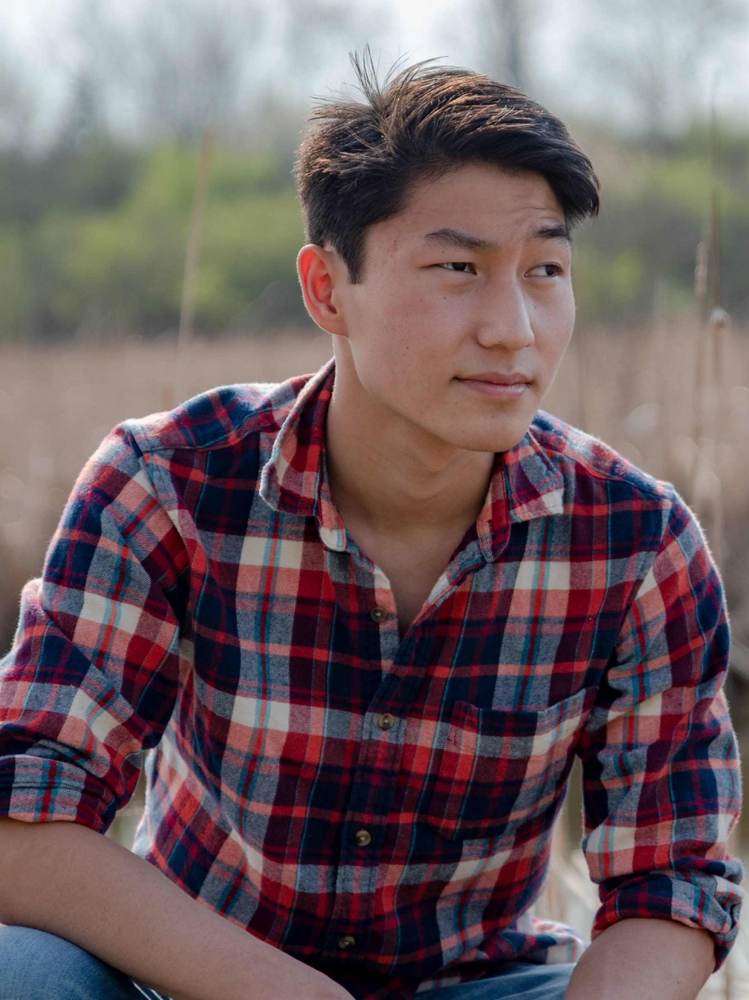
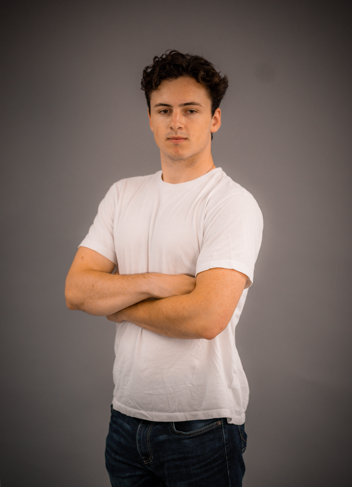
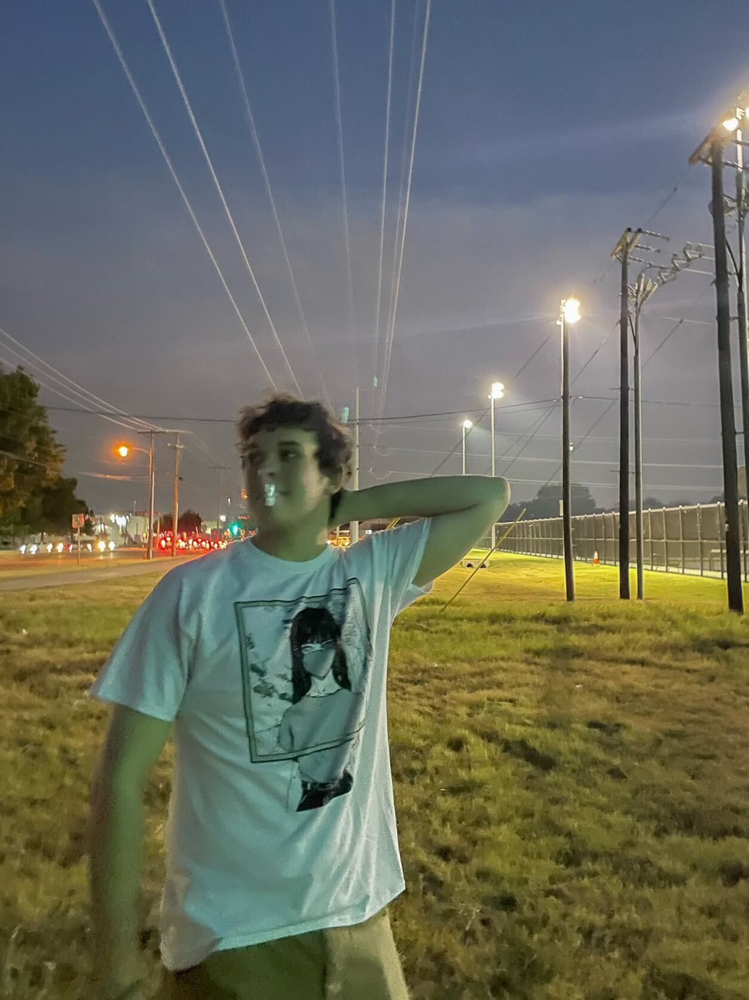
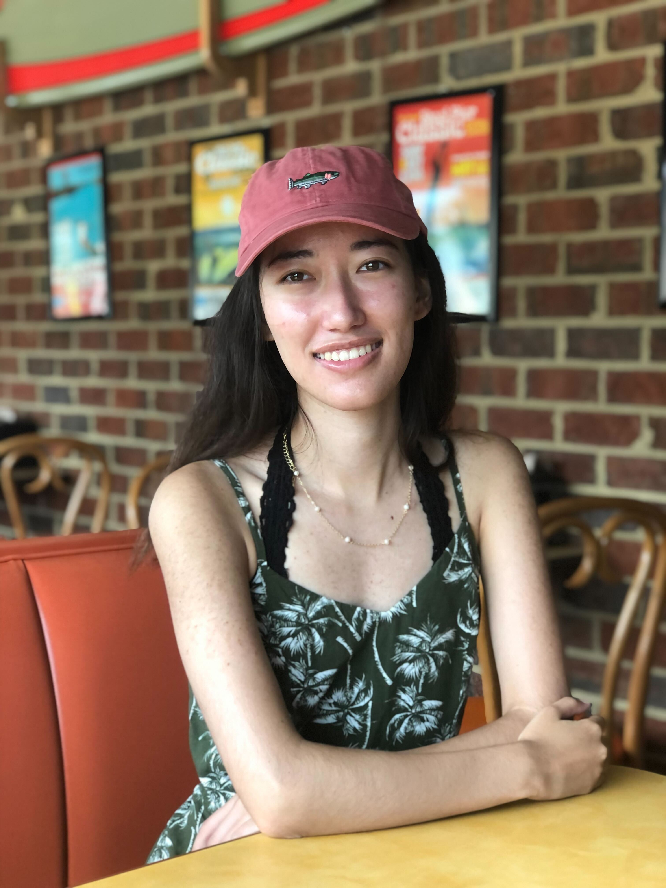
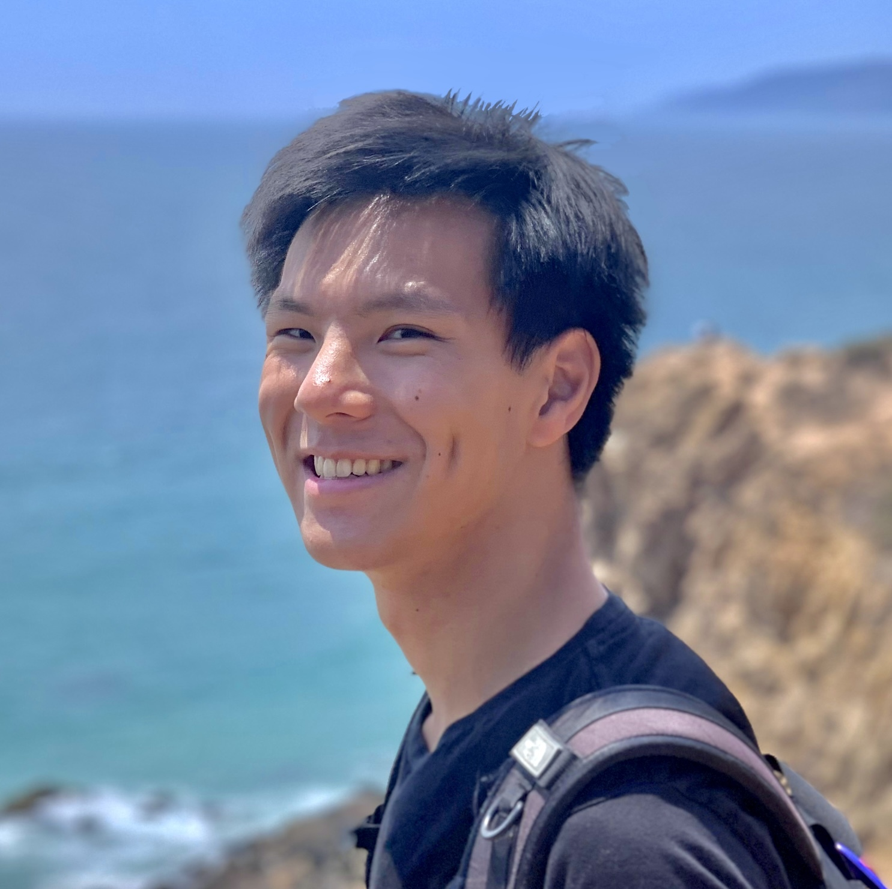

Capture at Cornell was founded by Ming DeMers, Shihao Cao, and Travis Zhang in Spring of 2022. A chance moment on a
particular wintery day at Libe Slope brought them together. They started with the idea for a community of
photographers and videographers who could support each other, explore, and grow. Since the beginning, the club has
aimed to be inclusive and open to all. The three quickly worked to craft a Constitution and structure of their club.
For Spring Club Fest, C@C occupied a vacant table with their photography gear splayed out. Over 90 members signed up
that day.
Since, C@C has striven to provide opportunities to its g-body entirely free of charge. There have been numerous
collabs with other clubs and external organizations. Photographers have met at photowalks, sharpened their skills at
workshops, and get professional experience at collabs. Videographers have been to dance competitions, flown drones,
and worked together on edits for the club.
E-Board
Ming DeMers
President and Founder
Ming founded Capture at Cornell in Spring of 2022 with two other Photographers, Shihao Cao and Travis Zhang. He
studies CS and English and is the Class of 2025 and is Milstein Program in Technology and Humanity Scholar and
Cornell Tradition Fellow. Apart from his photography business, he shoots for the Cornell Daily Sun and loves
street photography. You can find him Rock Climbing, at Running Club, or working in Temple of Zeus.

Sam Curtis
Vice President
Sam is a bio justice major and senior in ILR school from Scarborough, Maine. portrait and street photography,
drone videography. He is also the director of photography for the Cornell Fashion Collective and Editor In Chief
Editor at Cornell Undergraduate Law & Society Review. He also enjoys playing piano and guitar.

Spencer Dunn
Treasurer
Spencer joined Capture at Cornell in Spring of 2022, coming to their first ever g-body meeting in March, and
joining the E-Board as treasurer shorty after.
Spencer is affiliated with Computer Science in the College of Engineering, hoping to graduate in 2024; outside
of academics and photography, he enjoys origami and baking.

Veronica Gluza
Secretary
Veronica is the secretary on the EBoard on Capture at Cornell. She got involved with photography in highschool
and started with landscapes and sports. When she came to Cornell she changed her subject focus to wildlife,
particularly birds. In her free time she is a regular gym goer and the treasurer for Cornell Barbell as well as
a graduate research student in Systems Engineering.
Constance Newell
Social Media Chair
Constance is a 3rd year biological sciences major, with a concentration in genetics, at CALS. She has worked
with C@C since the beginning, and enjoys painting and woodworking outside of school. At Ithaca Dental, she assists
in the pediatric lip and tongue-tie revisions.

Shihao Cao
Senior Advisor
Shihao is a Senior on the EBoard on Capture at Cornell. As the senior advisor, he helps plan events and
operations. He got involved with photography because he is the dad in all of his friend groups. In his free
time, he loves downhill longboarding. He is also involved in Big Red Hacks, Cornell Custom Silicon Solutions,
and Entrepreneurship at Cornell.

Travis Zhang
Senior Advisor
Travis is a junior majoring in Computer Science. He’s currently a Senior advisor for Capture at Cornell, helping
with organizing the club. He started pursuing photography as a kid with his close friend at home. Whenever he
traveled, he would always bring his camera equipment and iPhone to take pictures of the scenery around him. He
is actively involved in Cornell Data Science,
and does research in self-driving cars on the side. In his free time, he likes snowboarding, playing tennis &
volleyball, and F1.
Michael Goldstein
Faculty Adivsor
Michael is the faculty advisor for C@C and a professor of psychology at Cornell. He leads the baby lab and is
known for his bird photography. On his spare weekends, he can be seen flying gliders, exploring nature, and
bringing his camera everywhere he adventures.